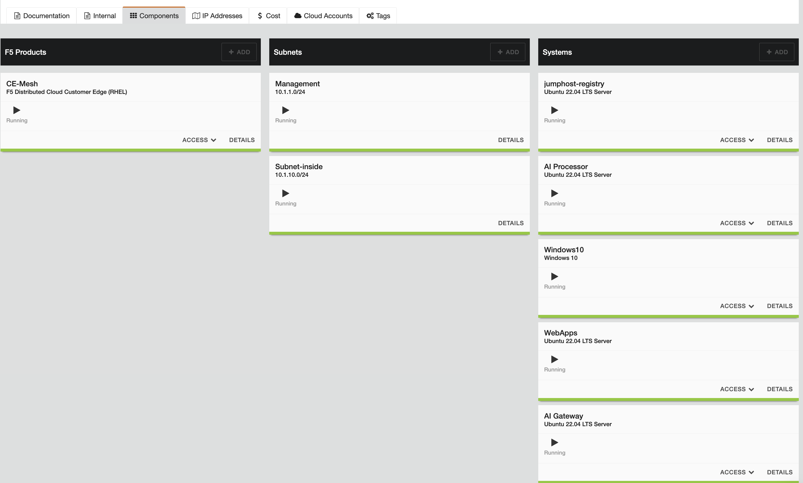
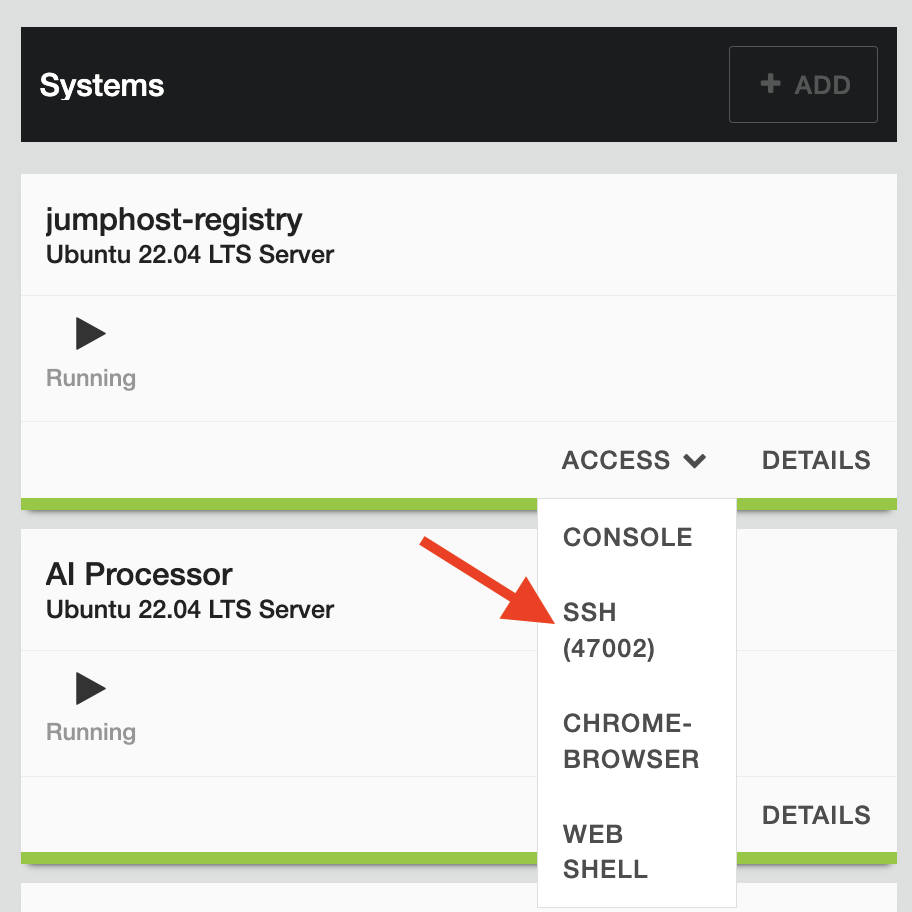
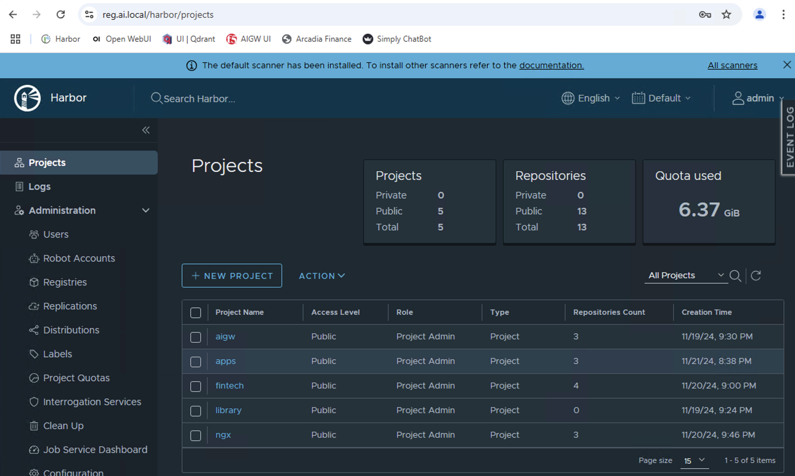

Secure, Deliver and Optimize GenAI Apps with F5 Source | Edit on
Prerequsite¶
Objective:¶
Ensure LAB ennvironment is ready and Running to execute subsequent task.
Blueprint
Attention
Classes depend on private registry server (Harbor Registry). Ensure its up and running before proceed.
Login to Linux Jumphost
You should be able to get the following prompt on “reg” server.

Run the folowing command to ensure registry service active and running.
sudo systemctl status harbor
Harbor registry should shown active (running)

Note
Only run the following if harbor not or partially running.
sudo systemctl stop harbor
sudo systemctl start harbor
sudo systemctl status harbor
Login to a remote desktop (RDP) to access registry server to ensure you able to login.

Windows10 RDP login password can be obtainsed as following

Window 10 Jumphost

Access to Harbor Registry server with Chrome browser
| Username | admin |
| Password | F5Password |

Sucessfully login to registry server.
Environment:¶
| Service | FQDN / URL | IP Address |
|---|---|---|
| Open-WebUI Service | open-webui.ai.local | 10.1.1.4 |
| AI Gateway Core | aigw.ai.local | 10.1.1.4 |
| AI GW Configuration Service | aigw-config.ai.local | 10.1.1.4 |
| AIGW UI Service | aigw-ui.ai.local | 10.1.1.4 |
| Ollama Service | ollama.ai.local | 10.1.1.4 |
| Registry Service / Jumphost | reg.ai.local | 10.1.1.7 |
| Arcadia Financial Modern Apps | arcadia.ai.local | 10.1.1.9 |
| Simply Chatbot | simply-chat.ai.local | 10.1.1.9 |
| Langchain / LLM Orchestrator | llm-orch.ai.local | 10.1.1.9 |
| Vector Database | vectordb.ai.local | 10.1.1.9 |